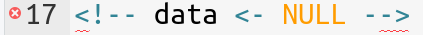
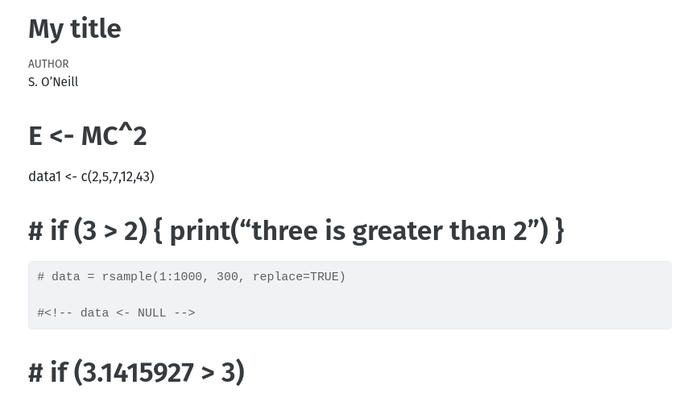

Comments - how to
1 How to spefify comments in R code and Quarto MarkDown
One of the core ideas of R and Quarto MarkDown is to make the code human readable – a concept known as literal programming.
R+Quarto code is certainly more readable than classic programming languages, but it is unlikely that you are able to write code that is entirely self-explanatory to a human reader … you will need to add comments for future readers (probably yourself!) to understand the code.
R code
In R code, you can add a comment using the hashtag #, like this:
# This is a single-line comment in R code
# ...and there are no multi-line comments: You must add an # for each line
x <- 2 + 2 # ...but inline comments are okayQuarto
<!-- This is a single-line comment in markdown -->
<!--
This is a multi-line
comment in markdown
-->
..and inline <!-- comments are okay too -->Look at this, admittedly ugly and pointless Quarto MarkDown document:
---
title: "My ugly Quarto Markdown document"
author: S. O'Neill
---
# E <- MC^2
data <- c(2,4,7,12,4)
<!-- c <- sqrt(a^2 + b^2) -->
# # if (3>2) then print("two too small")
```{r my chunk}
# data <- rsample(1:1000, 100, replace=TRUE)
<!-- data <- NULL ->>
```
# if (pi > 3) then <!-- print("Pi is bigger than 3") -->Discuss the following points with your colleague, before looking at the solution below:
- Can you identify the comments in the document?
- What would you expect the output to look like?
If you had type the MarkDown document above into Rstudio, you might have noticed red squiggly lines and a the warning symbol in the left margin of line 16? .
This should tell you, there is a problem with the R code and indeed the code will not run to produce output – can you tell what the problem is? …now click below for the full answer.
Okay so. Line 16 was not valid R code. The line was actually a single-line markdown comment and it belongs in markdown and not inside an R code chunk.
If we comment out that line with a hashtag # as appropriate for valid R code, we get the following output:

In other words, only lines 10 and 15 were valid comments.
Bonus question: Explain how line 20 worked to produce the output it did.